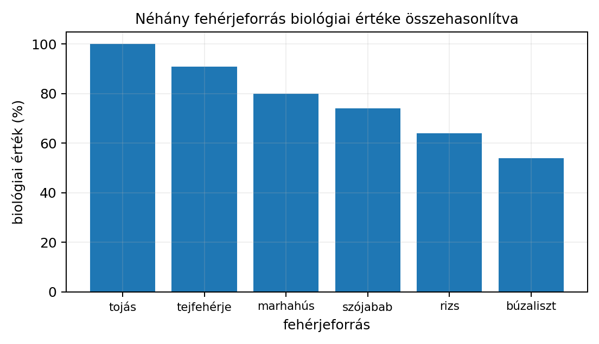

Reggel rántottát sütsz, délben csirkemellet pirítasz, délután habos desszerthez tojásfehérjét versz fel. Mindhárom esetben ugyanaz a tápanyag változik meg a szemed előtt: a fehérje. Ha nem érted ezt a változást, a rántotta gumis, a hús száraz, a hab szétesik. A fehérje nemcsak a vendég izomzatának építőanyaga, hanem a szakács kezében is dolgozó anyag: alvad, habot képez, kocsonyásít, és adja a főtt-sült ételek állagát.
Vegyünk egy nyers tojást. A tojásfehérje áttetsző, folyós, kissé kocsonyás. Ha óvatosan melegíted, a tojásfehérje 60 °C körül fehéredni kezd, majd szilárdul. A folyadékból szilárd anyag lesz. A folyamat visszafordíthatatlan: a kihűlt tojás nem lesz újra folyós. Ugyanezt látod a hús, a hal és a tej esetében is, amikor hőt kapnak. A megfigyelés mögött a fehérjék szerkezetének megváltozása áll.
Definíció. A fehérje (protein) olyan nagy molekulájú tápanyag, amely aminosavakból épül fel. Az aminosavak szénből, hidrogénből, oxigénből, nitrogénből, egyesek kénből állnak. A fehérjék a test építőanyagai és a konyhai állományváltozások főszereplői.
Összefüggés. Az aminosavak úgy kapcsolódnak egymáshoz, mint a gyöngyszemek egy nyakláncban. A kapcsolatot peptidkötésnek nevezzük. A fehérje működését nemcsak az aminosavak sorrendje, hanem a lánc térbeli feltekeredése is meghatározza. A konyhában leggyakrabban éppen ezt a térszerkezetet változtatjuk meg hővel, savval, sóval vagy mechanikai munkával.
Az emberi szervezet számos aminosavat elő tud állítani, de egy részüket nem, vagy csak nem elegendő mennyiségben. Ezeket esszenciális aminosavaknak nevezzük, és a táplálékkal kell bevinni.
Definíció. Esszenciális aminosavak azok az aminosavak, amelyeket a szervezet nem tud előállítani, ezért az étrendnek kell tartalmaznia őket. Az ember számára általában kilenc aminosavat tartunk esszenciálisnak: hisztidin, izoleucin, leucin, lizin, metionin, fenilalanin, treonin, triptofán, valin. A pontos lista az életkor és a táplálkozástudományi ajánlások szerint némileg változhat (ellenőrizendő: aktuális ajánlás).
Definíció. A biológiai érték azt mutatja, hogy a fehérje aminosav-összetétele mennyire hasonlít az emberi szervezet fehérjéjéhez, illetve milyen hatékonysággal hasznosul. A tojás teljes értékű, referenciaértéke 100. A tej, a hús és a hal szintén magas biológiai értékű. Sok növényi fehérje alacsonyabb értékű, mert egy vagy több esszenciális aminosavból keveset tartalmaz.
Ha egy fehérjeforrásban valamelyik esszenciális aminosavból túl kevés van, az korlátozza a többi hasznosulását. Ezt limitáló aminosavnak nevezzük. A gabonákban gyakran a lizin, a hüvelyesekben a metionin a limitáló. Ha azonban például babot és rizst, lencsét és kenyeret, vagy gabonát és tejterméket fogyasztunk együtt, az aminosavak kiegészítik egymást. Ezért beszélünk kiegészítő fehérjeforrásokról. A klasszikus magyar konyha is ismeri ezt: bableves kenyérrel, lencse főtt tésztával, túrós tészta.

Az oszlopdiagram azt mutatja, hogy a tojás, a tej és a hús magas biológiai értékű, a növényi fehérjék alacsonyabbak. A pontos értékek táblázatonként eltérhetnek (ellenőrizendő: tápanyagtáblázat).
Definíció. Állati fehérjeforrásnak nevezzük a húsokat, halakat, tojást, tejet és az ezekből készült termékeket. Növényi fehérjeforrásnak nevezzük a hüvelyeseket (bab, borsó, lencse, szójabab), a gabonákat, az olajos magvakat és a belőlük készült termékeket.
Az állati fehérjék általában teljes értékűek, mert esszenciális aminosav-összetételük hasonló az emberi fehérjéhez. A növényi fehérjék közül a szójabab viszonylag kedvező, de a legtöbb gabona és hüvelyes önmagában nem teljes értékű. A konyhai gyakorlatban ezért érdemes növényi fehérjeforrásokat kombinálni, különösen vegetáriánus vagy vegán étrend esetén.
Definíció. A denaturáció a fehérje térszerkezetének megváltozása hő, sav, só, mechanikai hatás vagy alkohol következtében. A fehérjelánc kitekeredik, de az aminosav-sorrend nem szakad szét. A denaturáció a konyhai állagváltozások alapja.
Szabály. A denaturációt okozhatja hő (sütés, főzés), sav (citromlé, ecet), só (páclé), mechanikai munka (keverés, habverés) és alkohol (egyes mártások). A hődenaturáció gyakran visszafordíthatatlan: a főtt tojásfehérje kihűlve sem lesz újra átlátszó, folyós.
A denaturált fehérjék új keresztkötéseket alakíthatnak ki egymással, és hálót képeznek. A háló magába zárja a vizet és a többi anyagot. Ezt a folyamatot alvadásnak nevezzük.
Definíció. Az alvadás a denaturált fehérjék hálós szerkezetének kialakulása. Az alvadás felelős a tojás, a hús, a hal és sok tejtermék megszilárdulásáért.
Az alvadás hőmérséklet-tartománya nyersanyagonként eltér. Az alábbi táblázat a leggyakoribb konyhai tartományokat mutatja.
| Fehérjeforrás | Jellemző alvadási tartomány | Konyhai megfigyelés | Megjegyzés |
|---|---|---|---|
| Tojásfehérje | kb. 60–65 °C | áttetszőből fehér, szilárdul | a hőkezelés elején |
| Tojássárgája | kb. 65–70 °C | folyékonyból krémes, majd szilárdul | a sárgája később szilárdul |
| Teljes tojás | kb. 70–80 °C | omlett, rántotta állaga | maghőmérővel ellenőrizd |
| Izomfehérjék (hús) | kb. 40–70 °C | színváltás, állag tömörül | a biztonságos maghőmérséklet külön szabályozott |
| Kollagén | 60–70 °C-on zsugorodik; 80–100 °C-on hosszú nedves hővel zselatin | rágósból puha, kihűlve kocsonyásodik | párolás, főzés |
| Tejfehérjék (tejsavó) | kb. 70–80 °C | tejbőr, kicsapódás | a kazein savas alvadása külön folyamat |
A táblázat értékei tanulási értékek, a pontos tartományok nyersanyagonként és feldolgozottságtól függően eltérhetnek (ellenőrizendő: tankönyvi érték).
Az ábra ugyanezt a táblázatot hőmérséklet-skálán mutatja: minden oszlop egy fehérjeforrás alvadási tartománya, a szaggatott vonal a biztonságos maghőmérséklet (a HACCP-terv szerinti érték; a könyv tanulási példája 75 °C, ellenőrizendő: NÉBIH-útmutató / HACCP-terv). A tojásfehérje, a sárgája és az izomfehérjék már e vonal alatt megalvadnak: a hús lehet „kész” állagú, és mégsem biztonságos. A kollagén két sávja mutatja, hogy a zsugorodás és a zselatinná alakulás két külön folyamat.
Ebből következik a konyhai szabály: az állag és a szín nem helyettesíti a maghőmérőt. A HTML-kiadásban a hőmérséklet-csúszkával kiválaszthatod a hőfokot (pl. 63 °C: a fehérje már szilárdul, a sárgája még folyós), és az ábra kiemeli, mely fehérjék alvadtak meg addig.
Allergén. A 14 fő jelölésköteles allergén nagy része fehérjetermészetű, például a tej, a tojás, a glutént tartalmazó gabonafélék, a földimogyoró, a diófélék, a hal, a rákfélék, a szójabab, a zeller, a mustár, a szezámmag, a csillagfürt és a puhatestűek. Az allergiás vendég számára nem elég azt tudni, hogy egy étel „fehérjét” tartalmaz, hanem pontosan meg kell nevezni a fehérjeforrást. A hőkezelés nem mindig szünteti meg az allergén fehérjét.
Habképzés. A tojásfehérjét mechanikai munkával, például habverővel úgy denaturáljuk, hogy a fehérjék a levegőbuborékok felszínén terülnek szét, és vékony, rugalmas hártyát képeznek. A buborékokat a fehérjeháló stabilizálja. A hab akkor jó, ha a habverő felemelésekor a hab csúcsot tart. Néhány csepp sav (például citromlé) segítheti a stabilitást (ellenőrizendő: konyhatechnológiai tankönyv); a só inkább rontja, a zsír vagy tojássárgája pedig akadályozza a habképzést.
Emulgeálás. A fehérjék egyik oldala vízkedvelő, másik oldala zsírkedvelő. Ezért a fehérjék segítenek összetartani a víz és a zsír keverékét. A tojássárgája, a tej fehérjéi és a mustár fehérjéi például a majonézben, a hollandi mártásban vagy a salátaöntetben a zsírcseppek és a víz közé állnak, és megakadályozzák a szétválást.
Kollagén–zselatin átalakulás. A hús kötőszöveti rostjai főleg kollagénből állnak. Gyors, száraz sütésnél a kollagén összezsugorodik, a hús rágós marad. Ha azonban a húst hosszú, nedves hőkezeléssel, például párolással vagy főzéssel készítjük, a kollagén zselatinná alakul. A zselatin forró vízben oldódik, kihűlve kocsonyás géllé szilárdul. Ezért kocsonyásodik meg a marhalábszárból vagy sertéslábból főtt lé.
Továbbvitt eredmény. A fehérjék konyhai viselkedését, különösen az alvadási tartományokat, a Szénhidrátok és élelmi rostok, a Tej, tejkészítmények és tejtermékek, az A tojás, az A hús szerkezete, összetétele és érlelése és az A hőközlés módjai és a maghőmérséklet alfejezetek használják tovább.
A fehérje nem raktározható nagy mennyiségben, ezért rendszeresen be kell vinni a táplálékkal. A fehérjeszükséglet függ az életkortól, a nemtől, a testtömegtől, a fizikai aktivitástól és az egészségi állapottól.
Szabály. Tanulási értékként felnőtteknél napi 0,8 g fehérjét számolunk testtömeg-kilogrammonként (ellenőrizendő: aktuális hazai táplálkozási ajánlás, például OKOSTÁNYÉR). Sportolóknál, várandósoknál, gyermekeknél vagy betegségben az igény eltérhet; a diétás étrendet dietetikus állítja össze.
Az alábbi tápanyagértékek tájékoztató jellegűek (ellenőrizendő: tápanyagtáblázat). A számítás bemutatja, hogyan lehet egy tányér étel fehérjetartalmát kiszámolni.
Számítás 1. Egy ebéd a következő anyagokból áll: 150 g nyers csirkemellfilé, 200 g főtt rizs, 100 g párolt brokkoli. A tápanyagtáblázat szerint 100 g nyers csirkemellfilé 22,0 g fehérjét, 100 g főtt rizs 2,4 g fehérjét, 100 g párolt brokkoli 2,4 g fehérjét tartalmaz.
A fehérjetartalom képlete:
ahol az élelmiszer fehérjetartalma, az élelmiszer tömege, pedig a 100 g élelmiszerre megadott fehérjetartalom.
Csirkemell:
Rizs:
Brokkoli:
Összesen:
Ellenőrzés. A csirkemell adja a legnagyobb részt, ami reális, mert hús. A brokkoli hozzájárulása kicsi. Az eredmény grammban értelmes.
Számítás 2. Egy 70 kg-os felnőtt fehérjeszükségletét a 0,8 g/ttkg/nap tanulási értékkel számoljuk.
A fenti ebéd a napi szükséglet hány százalékát fedezi?
Ellenőrzés. A 71,8 % nagynak tűnik egy étkezésre, de a példa nagy adag csirkemellet tartalmaz, és a többi étkezésben lehet kevesebb fehérje. A tanulási értékek miatt az üzemi konyhán a saját tápanyagtáblázatot kell használni.
A fehérje konyhai viselkedését érzékszervi és mérhető jelekkel ellenőrizheted.
Hiba 1. A rántotta vagy omlett túl magas lángon készül. A fehérje túl gyorsan alvad, a háló összehúzódik, a vizet kiszorítja. Az eredmény száraz, gumis. Helyes gyakorlat: mérsékelt hőfok, gyakori keverés, a végső alvadásnál inkább a maradékhőre hagyatkozz.
Hiba 2. A húst sütés közben villával szurkálják. A fehérje összehúzódik, a húslé a szúrásokon keresztül kifolyik. Helyes gyakorlat: csipeszt vagy lapátot használj, és sütés után a húst néhány percig pihentesd, mielőtt felszeleted.
Hiba 3. A tojásfehérjét zsíros, nedves tálban verik fel. A zsír megakadályozza, hogy a fehérje a levegőbuborékok körül stabil hártyát képezzen. Helyes gyakorlat: zsírmentes, száraz rozsdamentes tál és habverő; a fehérjébe ne kerüljön sárgája.
Hiba 4. A zselatinoldatot sokáig forralják. A zselatin tovább bomolhat, és gyengébb lesz a kocsonyásodás. Helyes gyakorlat: a zselatint a gyártói utasítás szerint oldd fel, és ne forrald tartósan.
Egy tanuló szakács vasárnapi menühöz csirkemellet sütött. A szeletek nem voltak egyforma vastagok. A tanuló minden szeletet ugyanannyi ideig sütött. A vékony szeletek kiszáradtak, a vastagok belül nyersek maradtak. A vendég visszaküldte a nyersnek tűnő húst. A séf elmagyarázta, hogy a fehérjék alvadása hőmérsékletfüggő, és a hús biztonságos elkészítéséhez nem elég az időt nézni. A tanuló megtanulta a maghőmérő használatát, és a következő alkalommal a vastagabb részen mérte a maghőmérsékletet, a vékonyabb szeleteket pedig rövidebb ideig sütötte.
1. feladat (A). Csoportosítsd a következő fehérjeforrásokat állati és növényi eredet szerint: tojás, lencse, csirkemell, mandula, tej, bab, hal, tofu.
2. feladat (A). Mennyi fehérje van 250 g tejben, ha 100 g tej 3,4 g fehérjét tartalmaz? (Tápanyagtáblázati érték, ellenőrizendő.)
3. feladat (B). Állítsd konyhai sorrendbe, mi történik a tojásfehérjével habverés és sütés során: levegő záródik be; a fehérje mechanikai hatásra denaturálódik; hő hatására a fehérjeháló alvad; stabil hab alakul ki. Magyarázd meg a sorrendet.
4. feladat (B). Számold ki egy 3 tojásból készült omlett fehérjetartalmát, ha 1 tojás átlagtömege héjjal 55 g, az ehető rész kb. 89%, és 100 g ehető tojás 12,5 g fehérjét tartalmaz. (Ellenőrizendő: átlagtömeg, ehető hányad, tápanyagtáblázat.)
5. feladat (C). Magyarázd meg, miért lesz a marhalábszárból hosszú főzéssel kocsonyás lé, a gyorsan sütött bélszínből viszont nem. Melyik fehérje alakul át?
6. feladat (D). Egy szakács tojásfehérjéből habot akar verni, de a hab nem keményedik meg, hanem szétesik. Sorolj fel legalább három lehetséges okot, és add meg a helyes eljárást.
1. feladat. Állati: tojás, csirkemell, tej, hal. Növényi: lencse, mandula, bab, tofu.
2. feladat. Adott: , . Keresett: .
A tejben 8,5 g fehérje van.
3. feladat. A helyes sorrend: a fehérje mechanikai hatásra denaturálódik; levegő záródik be; stabil hab alakul ki; hő hatására a fehérjeháló alvad. Habveréskor a denaturált fehérjék a levegőbuborékok felszínén hártyát képeznek, ezért a hab stabil. Sütéskor a hő tovább denaturálja a fehérjéket, és a háló megszilárdul.
4. feladat. Adott: 3 tojás, 1 tojás átlagtömege héjjal 55 g, az ehető rész kb. 89%, 100 g ehető tojás 12,5 g fehérjét tartalmaz. Keresett: a fehérjetartalom.
Először az ehető tojás tömege (a héjat levonjuk, mert a tápanyagtáblázat a héj nélküli részre vonatkozik):
Fehérjetartalom:
Az omlett kb. 18,4 g fehérjét tartalmaz.
5. feladat. A marhalábszárban sok a kollagén nevű rostfehérje. Hosszú, nedves hőkezeléskor a kollagén zselatinná alakul. A zselatin forró vízben oldódik, kihűlve kocsonyás gél. A bélszínben kevés a kollagén, gyors sütéskor az izomfehérjék denaturálódnak, de nem keletkezik annyi zselatin, hogy a lé kocsonyásodjon.
6. feladat. Lehetséges okok: zsíros, nedves tál vagy habverő; tojássárgája került a fehérjébe; a tojás nem friss; túl gyorsan vagy túl lassan verték. Helyes eljárás: zsírmentes, száraz fém- vagy üvegtálat használj; a fehérjét óvatosan válaszd el a sárgájától; friss, hűtött tojást használj; először lassan kezdd verni, majd fokozatosan gyorsítsd; a hab akkor kész, ha csúcsot tart.
A fehérjék aminosavakból felépülő makrotápanyagok. Az esszenciális aminosavakat a szervezet nem tudja előállítani, ezért a táplálékkal kell bevinni. A biológiai érték azt mutatja, mennyire hasonlít a fehérje aminosav-összetétele az emberi fehérjéhez; a tojás referenciaértéke 100. A növényi fehérjék gyakran kiegészítésre szorulnak, például hüvelyes és gabona együttes fogyasztásával. A konyhában a fehérjék denaturációja és alvadása határozza meg a hús, a tojás és a tejtermékek állagát. A tojásfehérje kb. 60–65 °C-on, a tojássárgája kb. 65–70 °C-on, a teljes tojás kb. 70–80 °C-on alvad (ellenőrizendő: tankönyvi érték). Az izomfehérjék kb. 40–70 °C-on denaturálódnak, a kollagén hosszú nedves hőkezeléssel kb. 80–100 °C-on zselatinná alakul (ellenőrizendő). Felnőtteknél tanulási értékként napi 0,8 g/ttkg fehérjét számolunk (ellenőrizendő: aktuális hazai ajánlás). Továbbvitt eredmény. A fehérjék konyhai viselkedését és alvadási tartományait a Szénhidrátok és élelmi rostok, a Tej, tejkészítmények és tejtermékek, az A tojás, az A hús szerkezete, összetétele és érlelése és az A hőközlés módjai és a maghőmérséklet alfejezetek használják tovább.